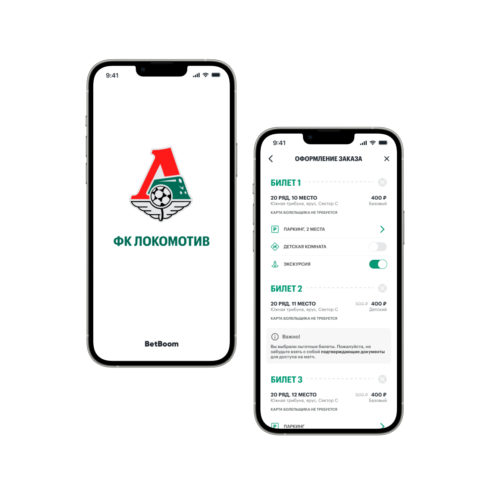
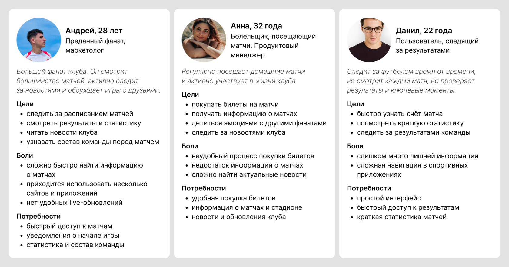
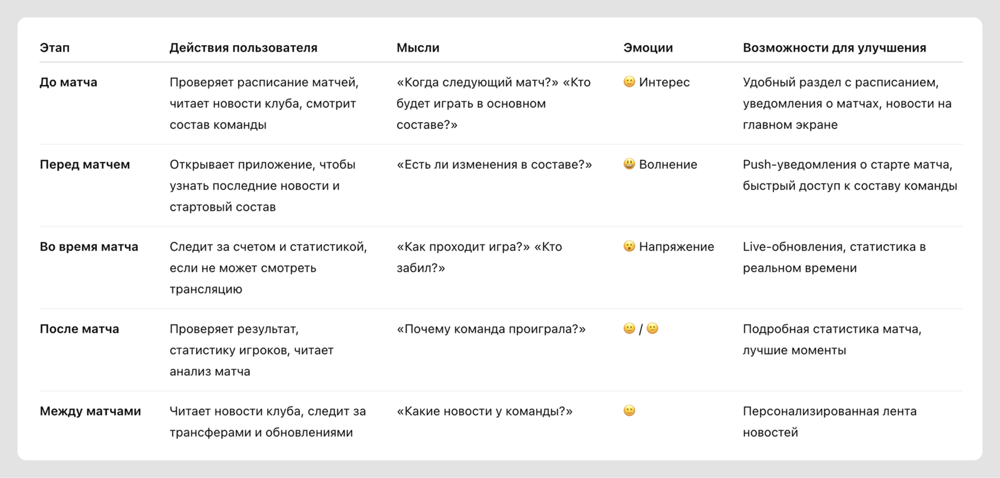
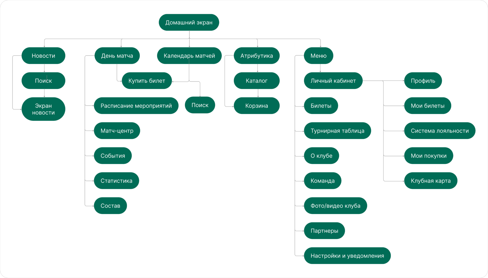
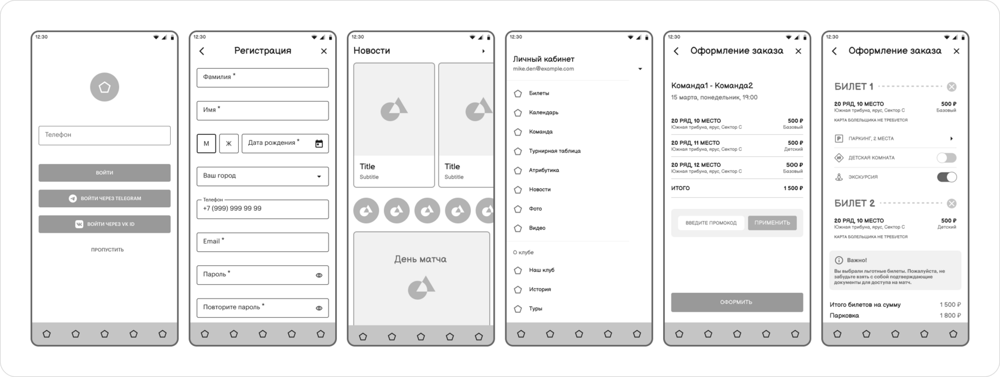
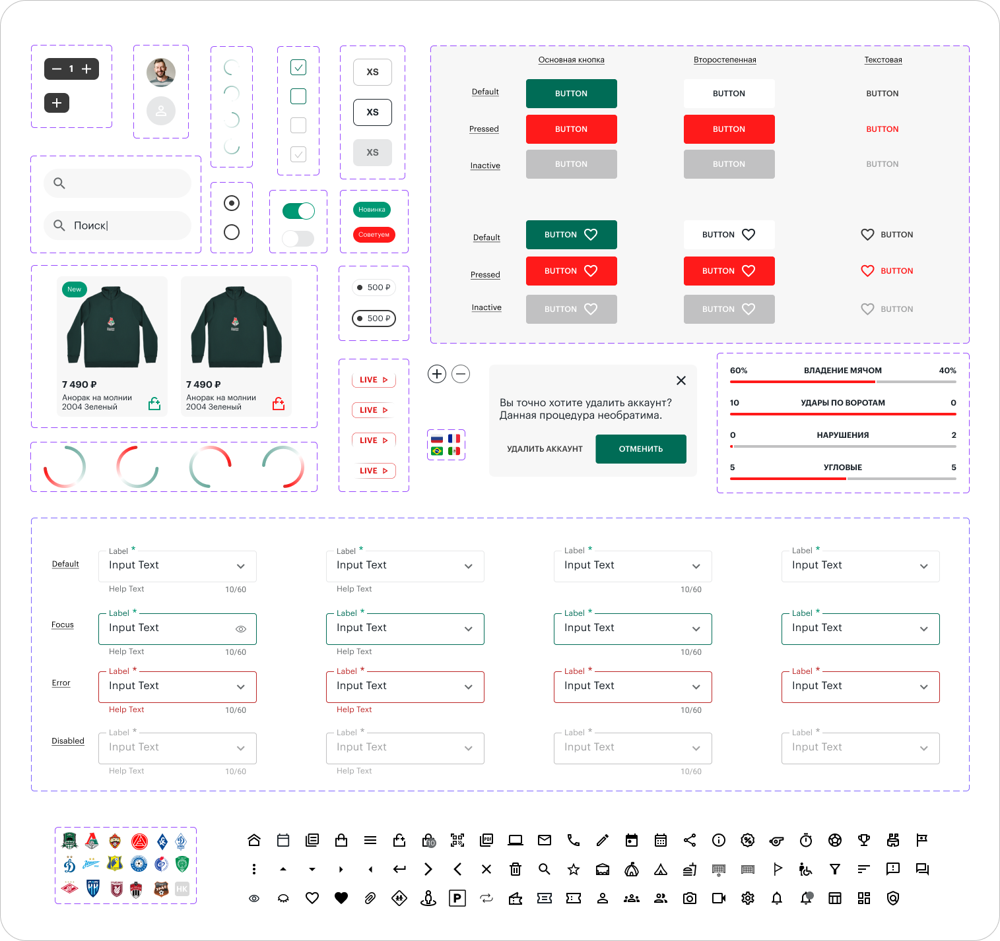
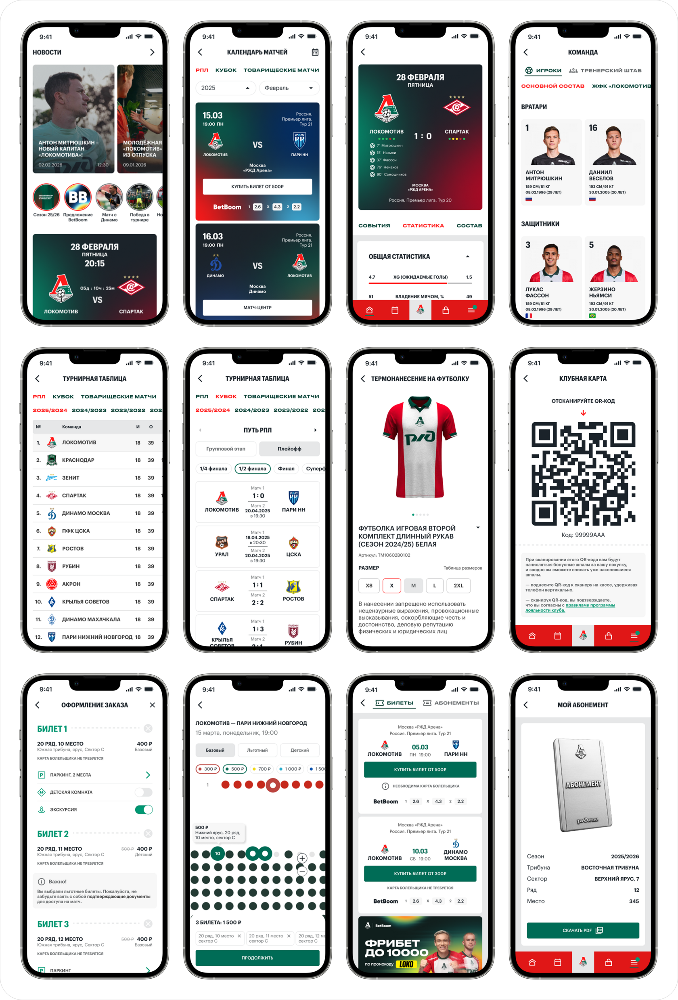

Проектирование мобильного приложения для ФК Локомотив
Ссылка на приложениеРазработала мобильное приложение для футбольного клуба с нуля. Цель проекта — создать единое цифровое пространство для болельщиков, где они могут следить за матчами, новостями клуба, статистикой игроков и взаимодействовать с клубом.
Проект включал полный цикл продуктового дизайна: исследование, UX-архитектуру, создание дизайн-системы и разработку интерфейсов.

Проблема
Футбольные клубы часто взаимодействуют с болельщиками через разные каналы: сайт, соцсети, сторонние сервисы. Это создает фрагментированный пользовательский опыт.
Основные проблемы:
- болельщикам сложно быстро находить информацию о матчах и результатах
- нет единой платформы для новостей, статистики и контента клуба
- отсутствует удобный способ вовлечения фанатов
Задача
Создать мобильное приложение, которое:
- объединяет весь контент клуба в одном месте
- предоставляет доступ к покупке билетов, атрибутики, к системе лояльности
- улучшает пользовательский опыт болельщиков
- повышает вовлеченность фанатов
- позволяет легко следить за матчами и результатами команды
Как UX/UI Designer
я отвечала за:
- UX-исследование
- анализ конкурентов
- проектирование пользовательских сценариев
- информационную архитектуру
- wireframes
- создание дизайн-системы
- UI дизайн
- подготовку макетов для разработки
Анализ целевой аудитории

User Journey Map
Персона: Андрей, 28 лет. Регулярно смотрит матчи команды, следит за новостями и хочет всегда быть в курсе событий клуба

Анализ конкурентов
Я проанализировала приложения других футбольных клубов (FC Barcelona, FC Spartak, Зенит, FC Bayern, HC Sochi, Liverpool FC, The Arsenal) и спортивных платформ (NHL, VHL, PL, OneFootball, РПЛ).
Основные инсайты:
- большинство приложений имеют перегруженную навигацию
- важнейшие функции для пользователей: результаты матчей, новости, состав команды и статистика
- болельщики хотят получать live-обновления во время матчей
На основе исследований я выделила ключевые функции приложения и разработала с их учетом структуру приложения.
Sitemap

UX Design
Я начала с создания wireframes, чтобы протестировать логику и структуру экранов.
Основное внимание было уделено быстрому доступу к матчам, удобной навигации, отображению статистики, просмотру контента клуба.
Wireframes помогли определить оптимальную структуру интерфейсов до перехода к визуальному дизайну.

Design System
Для проекта была разработана дизайн-система, которая обеспечила консистентность интерфейса и ускорила работу над экранами, а также облегчила работу разработчиков.
Она включала:
- цветовую палитру
- типографику
- сетку
- компоненты (buttons, cards, tabs, navigation)
- состояния элементов (hover, active, disabled)
- иконки
Для примера приведу часть дизайн-системы:

UI Design
В рамках проекта я разработала визуальный интерфейс мобильного приложения на основе ранее созданной UX-структуры и дизайн-системы. Был акцент на спортивную динамику, простоту восприятия информации, визуальную иерархию, удобство просмотра и быстрый доступ к статистике и результатам матчей.
Дизайн поддерживает бренд бук футбольного клуба и создает эмоциональную связь с болельщиками.
В рамках проекта были разработаны основные пользовательские экраны, включая:
- Главный экран приложения
- Матч центр
- Страницу матча
- Календарь матчей
- Состав команды и профиль игрока
- Статистику и турнирную таблицу
- Новостную ленту
- Сценарий покупки билетов
- Сценарий покупки атрибутики
- Личный кабинет пользователя
- Экраны регистрации/авторизации и др.

Итоги
В результате был создан полноценный концепт мобильного приложения, который улучшает доступ к информации о клубе, повышает вовлеченность фанатов, объединяет весь контент клуба в одном продукте, позволяет покупать билеты на матчи и атрибутику, предоставляет доступ к системе лояльности.